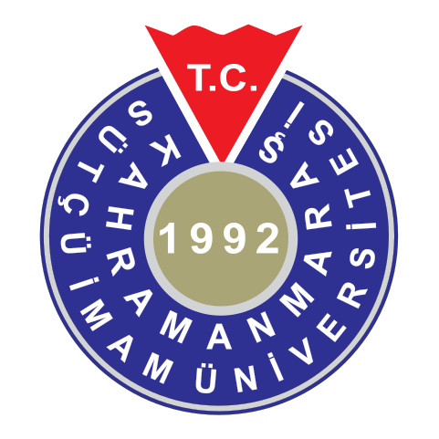

Prof.Dr.Mahit Güneş
KSÜ Mühendislik Fakültesi,Elektrik-Elektronik Mühendisliği
| Derece |
Bölüm/Program |
Üniversite |
Yıl |
| Lisans |
Elektrik-Elektronik Mühendisliği |
Anadolu Üniversitesi |
1992 |
| Yüksek Lisans |
Elektrik-Elektronik Mühendisliği |
Kahramanmaraş Sütçü İmam Üniversitesi |
1999 |
| Doktora |
Teknik Eğitim Fakültesi Bilgisayar ve Kontrol Programı |
Marmara Üniversitesi |
2005 |
| Görev Ünvanı |
Görev Yeri |
Yıl |
| Elektrik,Enerji Şefi |
MATESA Tekstil A.Ş Kahramanmaraş |
1993-1994 |
| Ar-Ge Mühendisliği |
HES şirketler gurubu,HES MAKİNA A.Ş Kayseri |
1994-1995 |
| Türkiye Temsilcisi |
Alman Wieland-Bamber firmasının Türkiye temsilcisi,İstanbul |
1995-1997 |
| Öğretim Görevlisi |
Kahramanmaraş Sütçü İmam Üniversitesi |
1997-2008 |
| Yrd.Doç.Dr |
Kahramanmaraş Sütçü İmam Üniversitesi |
2008-2012 |
| Doç.Dr |
Kahramanmaraş Sütçü İmam Üniversitesi |
2012-2017 |
| Prof.Dr |
Kahramanmaraş Sütçü İmam Üniversitesi |
2017- |
Yönetilen Yüksek Lisans Tezleri :
- Mobil Robot Kolunun Parçacık Sürü Optimizasyonu ile Stabilizasyonu. Aziz Ulusoy 2019.
- Parçacık sürü optimizasyonu (PSO) kullanarak öz ayarlamalı PID kontrolör tasarımı. Husseın Alruım Alhasan. 2018.
- Nesne takibi yapan denge robot tasarımı, Yunus Çelik. 2018.
- Otonom bir mobil robotun kayan kipli kontrol yöntemi ile yörünge kontrolü ve PID kontrol ile kıyaslanması. Necati Kurtlucan. 2018
- Otonom bir Mobil Robotun Parçacık Sürü Algoritması ile Optimum yörünge Kontrolü. EbubekirPekdemir. 2017.
- Grafen Katkılı Malzemelerin Elektromanyetik Kalkanlama Performansının İncelenmesi. Mahmut Altun. 2017.
- Uzaktan kumanda edilebilen mobil robota bağlı işaretleyici hedef takibi tasarımı. Ömer Berber. 2017.
- Otonom Mobil Robotun Hız Sabitleyici Tasarımı. Muharrem Ateş. 2017.
- İmalat Endüstrisine Yönelik Robot Kol Oryantasyonu ve Görüntü İşleme Yazılımının Geliştirilmesi. Fatih Arslan. 2015.
- Elektronik Kontrollü Çekilir Tip Bir Tarla Pülverizatörü Geliştirilmesi. Ahmet Ertuğrul Bay. 2014
- Örüntü Tanıma ile Ham Bez Hatalarının Tespiti. Hasan Güler. 2013.
- Üniversite Kampüsündeki Araç Plaka Tanıma Ve Takibi İçin Matematik Ve Algoritmik İlkeler. Ahmed Amir Khan. 2013.
- GPU ile Hızlandırılmış Bulanık Mantık Algoritmalarının Görüntü İşlemede Kullanılması. Hasan Badem. 2012.
- İplik yapımında kullanılan pamuk içerisindeki yabancı elyafların ayıklanması. Eyüp Yalçın. 2012.
Yönetilen Doktora Tezleri :
- Otonom robotlarda yol planlaması ve optimum kontrolü. Osman Doğmuş. (Devam ediyor)
- Sürü Robotların Modellenmesi, Davranış Analizi, Haberleşmesi ve Kontrolü. Eyüp Yalçın. (Devam ediyor)
İdari Görevleri
- Mühendislik Mimarlık Fakültesi Dekanı, (2018-2019)
- Elektrik-Elektronik Mühendisliği Bölüm Başkanı, (2018-Devam Ediyor)
- Kahramanmaraş TEKNOKENT Genel Müdürü, (2015-Devam Ediyor)
- Bilimsel Araştırma Projeleri (BAP) Komisyon Üyesi, (2016-Devam Ediyor)
- Patent Değerlendirme Komisyon Üyesi, (2017-Devam Ediyor)
- Mühendislik Fakültesi Kurulu Üyesi, (2017-Devam Ediyor)
- Devreler ve Sistemler Ana Bilim Dalı Başkanı, (2016-Devam Ediyor)
- Biyomühendislik Araştırma Uygulama Merkezi Yönetim Kurulu Üyesi, (2017-Devam Ediyor)
- Afşin Meslek Yüksek Okulu Yönetim Kurulu Üyesi, (2015-2018)
- ÜSKİM Araştırma Merkezi Laboratuvarı Müdürü, (2015-2016)
- Elektromanyetik Alanlar ve Mikrodalga Tekniği Anabilim Dalı Başkanı, (2011-2014)
- Üniversite Sanayi İlişkileri Koordinatörü, (2011-2012)
- Bilgi İşlem Daire Başkanı, (2011-2012)
- Bilgisayar ve Öğretim Teknolojileri Eğitimi Bölüm Başkanı, (2010-2011)
- Eğitim Fakültesi Kurullu Üyesi, (2010-2011)
- Fen Bilimleri Enstitüsü Müdür Yardımcısı, (2009-2014)
Hakemlik yaptığı bilimsel dergilerin bir kısmı
- IEEE Transaction on Energy Conversion.
- IEEE Transaction on Automation Science and Engineering.
- Eğitim Fakültesi Fakülte Kurulu Üyeliği, 2010-2011
- IEEE Transaction on Systems & Cybernetics.
- PIERS-JEMWA (Massachusetts institute of technology MIT publications)
- Turkish journal of electrical engineering & computer sciences
Bilimsel dergi editörlüğü
- KSU Journal of Engineering Sciences
Yazılan ulusal kitaplar veya kitaplarda bölümler:
- Mikro işlemciler ve Mikrodenetleyiciler I. (Editör), Lisans Yayıncılık, ISBN=9978–9944–274–22–7, Ocak 2008.
- Mikro işlemciler ve Mikrodenetleyiciler II. (Editör/Bölüm Yazarı), Lisans Yayıncılık, ISBN=978-605-4350-00-1, Ocak 2010.
Proje Hakemlikleri
TÜBİTAK TEYDEB Projeleri.
- 18 Adet Proje Hakemliği
- 3 Adet Proje İzleyiciliği
BİLİM SANAYİ VE TEKNOLOJİ BAKANLIĞI Ar-Ge Merkezleri
- 7 Adet Ar-Ge Proje Değerlendirme Komisyonu (Sektör Temsilcisi)
- 2 Adet Ar-Ge Proje Değerlendirme Komisyonu (Akademisyen Üye)
- 4 Adet Ar-Ge Merkezi Denetleme Hakemliği
KOSGEB AR-GE projeleri
- 4 Adet Ar-Ge Proje Değerlendirme Komisyonu (Akademisyen Üye)
Ulusal ve Uluslararası Bilimsel Etkinliklerde Aldığı Görevler
- TOK 2017 ulusal program kurulu
- TOK 2016 ulusal program kurulu
- TOK 2015 ulusal program kurulu
- TOK 2013 ulusal program kurulu
- Uluslararası Mühendislik Mimarlık ve Tasarım Kongresi
- Bilim Sanayi ve Teknoloji Bakanlığı, 2023’e 10 Kala Ar-Ge ve Yenilikte Hatay, Osmaniye ve Kahramanmaraş (Panelist)
- Bilim Sanayi ve Teknoloji Bakanlığı, II. Ar-Ge Merkezleri İyi Uygulama Örnekleri Zirvesi (Moderatör)
- Bilim Sanayi ve Teknoloji Bakanlığı, Ar-Ge Reform Paketi Hazırlık Çalıştayı
- 2023’e Doğru TÜBİTAK ile Geleceğe Bakış Çalıştayı.